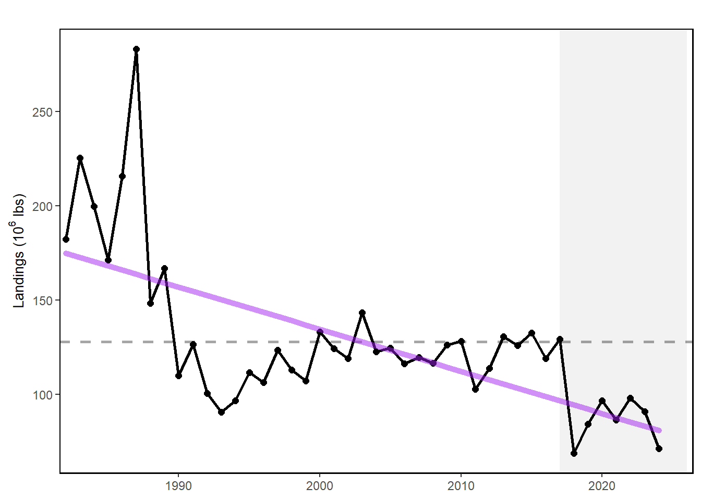
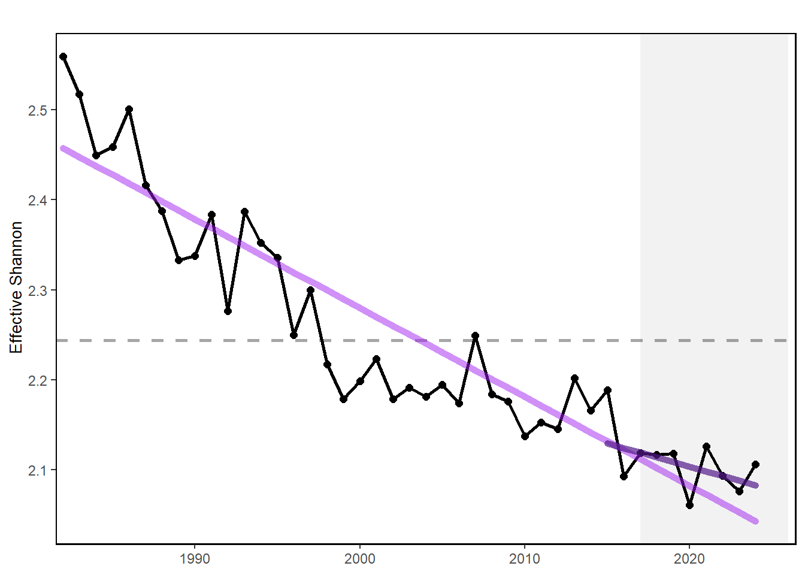
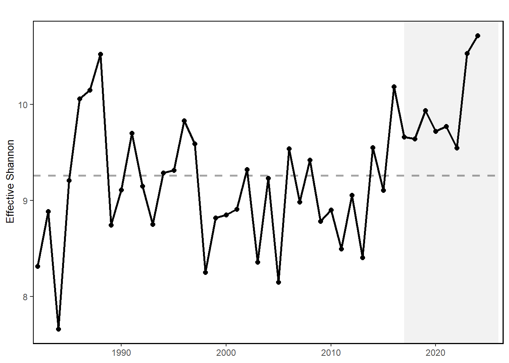
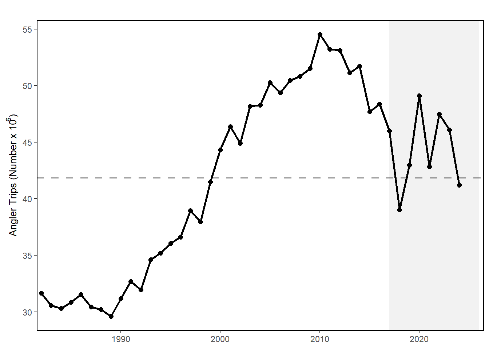
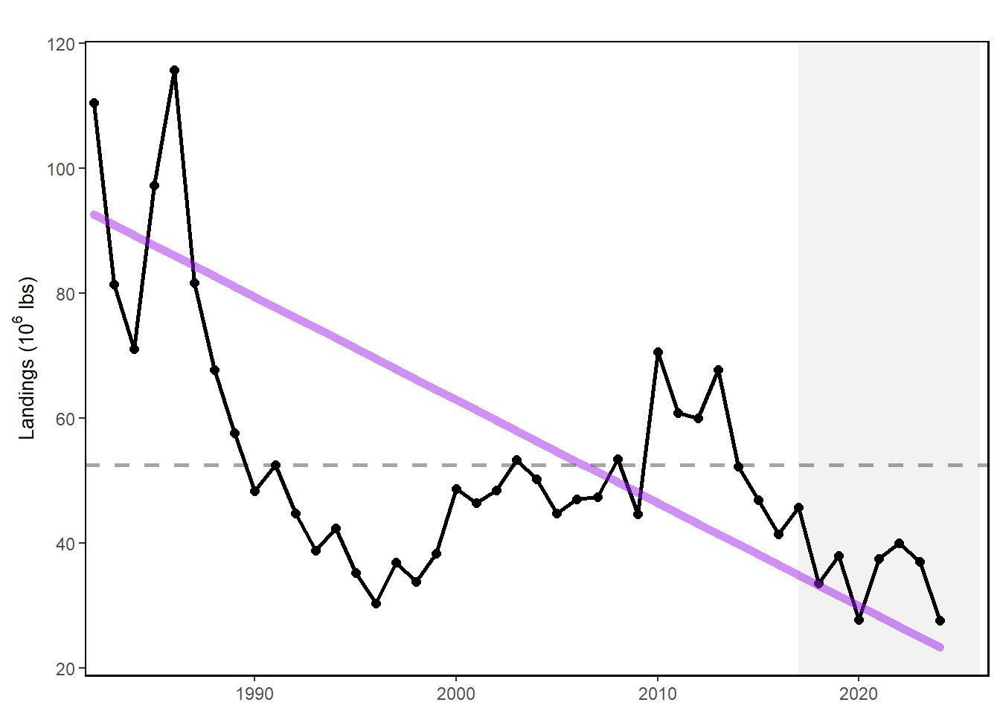
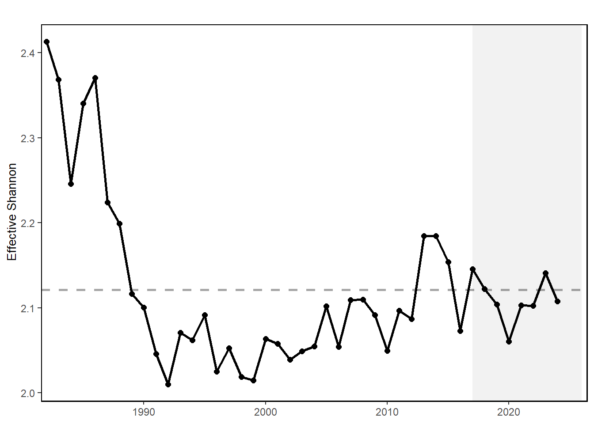
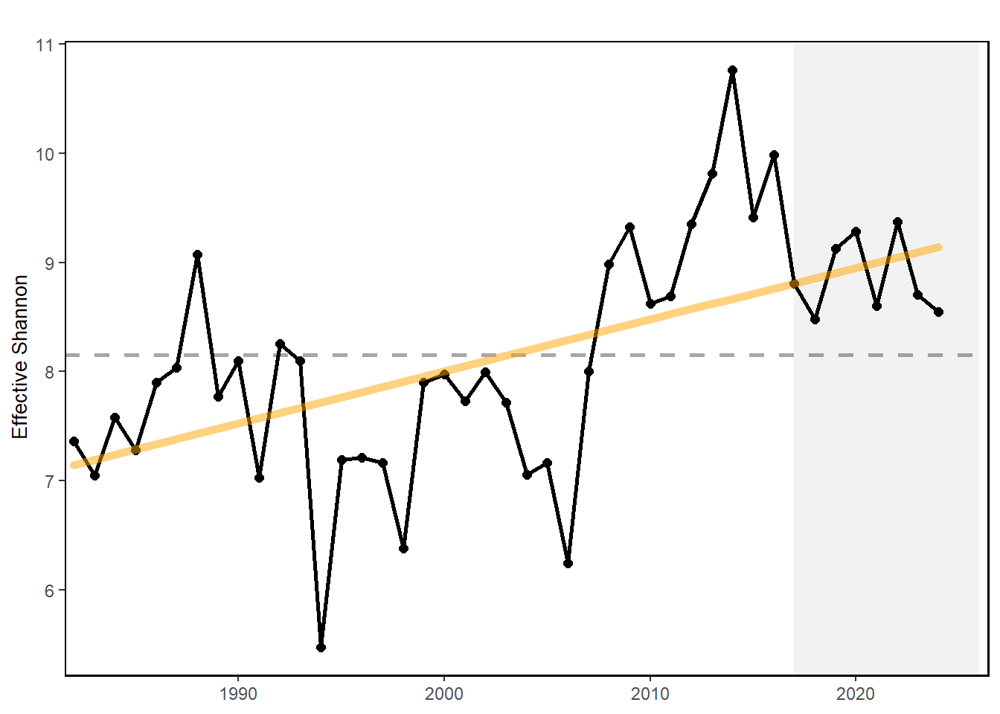
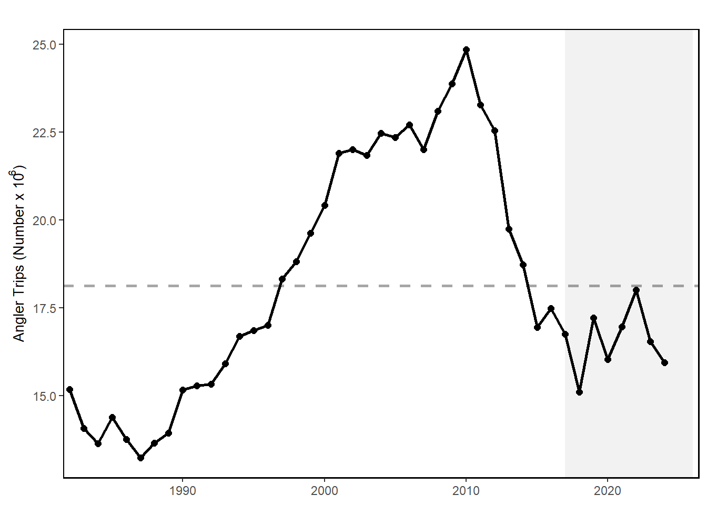

73 Recreational Fishing Indicators
Description: A variety of indicators derived from MRIP Recreational Fisheries Statistics, including total recreational catch, total angler trips by region, annual diversity of recreational fleet effort, and annual diversity of managed species.
Indicator family:
Contributor(s): Geret DePiper, Scott Steinback
Affiliations: NEFSC
73.1 Introduction to Indicator
We use total recreational harvest as an indicator of seafood production and total recreational trips and total recreational anglers as proxies for recreational value generated from the Mid-Atlantic and New England regions respectively. We estimate both recreational catch diversity in species managed by the Fisheries Management Councils; Mid-Atlantic (MAFMC), New England (NEFMC), South Atlantic (SAFMC) and Atlantic States (ASFMC), and fleet effort diversity using the effective Shannon index.
73.2 Key Results and Visualizations
Total recreational harvest (retained fish presumed to be eaten) is down in the MAB. Although harvest has increased from a historic low in 2018, it is still below the long term average. Overall, recreational harvest (harvested fish presumed to be eaten) have also declined in New England. Recreational harvest in 2023 is up somewhat from the historical low seen in 2020.
Recreational effort (angler trips) in New England increased during 1980-2010, but has since declined to just around the long-term average. Recreational fleets are defined as private vessels, shore-based fishing, or party-charter vessels. Recreational fleet diversity, or the relative importance of each fleet type, has remained relatively stable over the latter half of the time series in New England. In the Mid-Atlantic, recreational effort (angler trips) in 2023 is above the long-term average. However, recreational fleet diversity has declined over the long term.
In New England, recreational species catch diversity has been above the time series average since 2008 with a long-term positive trend. In the Mid-Atlantic, recreational species catch diversity has no long term trend so is considered stable, and has been at or above the long term average in 9 of the last 10 years.








73.3 Indicator statistics
Spatial scale: Mid-Atlantic and New England
Temporal scale: Annual
Synthesis Theme:
73.4 Implications
The decline in recreational seafood harvest in New England stems from multiple drivers. Changes in demographics and preferences over recreational activities likely play a role in non-HMS (Highly Migratory Species) declines in recreational harvest, with current harvests near the lowest in the time series. Drivers of the the decline in Mid-Atlantic recreational seafood harvest are unclear. NOAA Fisheries’ Marine Recreational Information Program survey methodology was updated in 2018, so it is unclear whether the record-low landings for species other than sharks in 2018 are driven by changes in fishing behavior or the change in the survey methodology. Nevertheless, the recreational harvest seems to be stabilizing at a lower level than historical estimates.
Diversity indices can be used to evaluate stability objectives as well as risks to fishery resilience and to maintaining equity in access to fishery resources. In New England, the absence of a long term trend in recreational angler trips and fleet effort diversity suggests relative stability in the overall number of recreational opportunities in the region. While the overall number of angler trips in the MAB is above the long-term average, the continuing decline in recreational fleet effort diversity suggests a potentially reduced range of recreational fishing options. The downward effort diversity trend is driven by party/charter contraction (currently below 2% of trips), and a shift toward shore-based angling, which currently makes up 59% of angler trips. Effort in private boats remains stable at around 40% of trips. Changes in recreational fleet diversity can be considered when managers seek options to maintain recreational opportunities. Shore anglers will have access to different species than vessel-based anglers, and when the same species is accessible both from shore and from a vessel, shore anglers typically have access to smaller individuals. Many states have developed shore-based regulations where the minimum size is lower than in other areas and sectors to maintain opportunities in the shore angling sector.
The increase in recreational species catch diversity in New England is due to recent increases in ASMFC and MAFMC managed species within the region as well as decreased limits on more traditional regional species. Stability in Mid-Atlantic recreational species catch diversity has been maintained by a different set of species over time. A recent increase in Atlantic States Marine Fisheries Commission (ASMFC) and South Atlantic Fishery Management Council (SAFMC) managed species in recreational catch is helping to maintain diversity in the same range that MAFMC and New England Fishery Management Council (NEFMC) species supported in the 1990s.
73.5 Get the data
Point of contact: EDAB, edab.data@noaa.gov
ecodata name: ecodata::recdat
Variable definitions
Ex: 1) Name: piscivore_biomass; Definition: Biomass of piscivores; Units: kg tow^-1. 2) Name: forage_biomass; Definition: Biomass of forage fish; Units: kg tow^-1.
1) Name: Recreational Seafood; Definition: Recreational Harvest; Units: lbs 2) Name: Recreational Effort; Definition: Recreational Trips; Units: Angler Trips
3) Name: Recreational Effort Diversity; Definition: Recreational fleet effort diversity across modes; Units: Effective Shannon Metric
4) Name: Recreational Catch Diversity; Definition: Recreational Diversity of Catch across managed species; Units: Effective Shannon Metric
Indicator Category:
73.7 Accessibility and Constraints
No response
tech-doc link https://noaa-edab.github.io/tech-doc/recdat.html